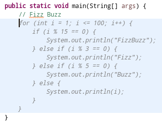
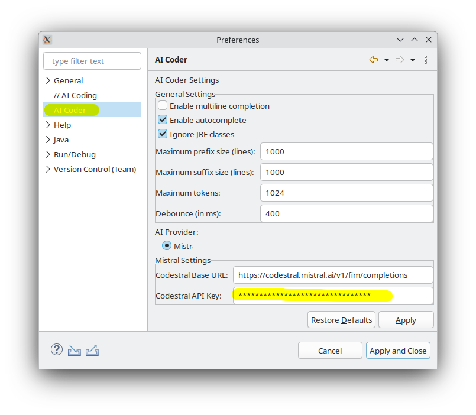
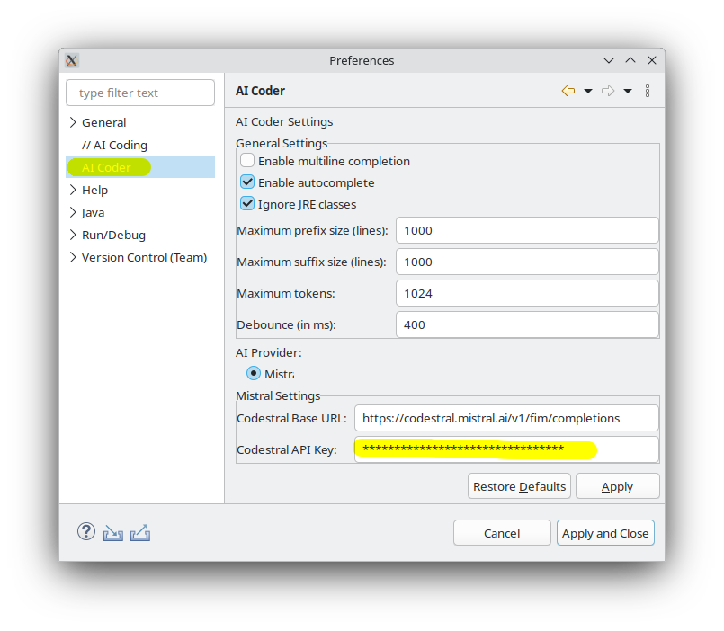
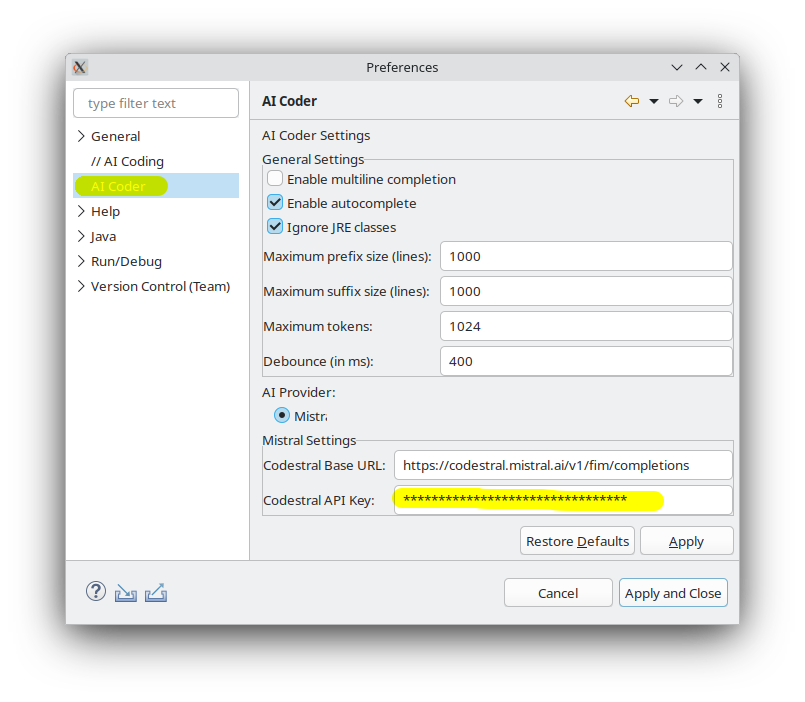

About the project
Eclipse AI Coder is an extension for the Eclipse IDE. It brings AI driven inline completion to the editor.
Features
- Support for Codestral (by Mistral) large language model (bring your own key)
- Triggers completion automatically or by shortcut (Ctrl + Shift + Space)
- Controllable context. See how the prompt is build and control its content
- Insights about each request: Word count, durations, status
- Deep understanding of Java projects. Adds imports and variables in scope to the prompt
- Toggle between single and multiline completion
Installation
- Install from Eclipse Marketplace
- Install from updatesite
Comparison with other tools
| Eclipse AI Coder | Tabnine | GitHub Copilot | Copilot4Eclipse | Jetbrains AI Assistant | Tabby | |
|---|---|---|---|---|---|---|
| Inline Completion | ✅ | ✅ | ✅ | ✅ | ✅ | ✅ |
| Open Source / Non-commercial | ✅ | ❌ | ❌ | ❌ | ❌ | ✅ |
| Eclipse Support | ✅ | ✅ | ✅ | ✅ | ❌ | ✅ |
| Manual Trigger | ✅ | ❌ | ❌ | ✅ | ❌ | ? |
| Bring your own key | ✅ | ❌ | ❌ | ❌ | ❌ | ✅ |
| Next Edit Suggestion | ❌ | ❌ | ✅ | ❌ | ❌ | ❌ |
| Toggle Multiline Completion | ✅ | ❌ | ❌ | ❌ | ❌ | ❌ |
| Context Control | ✅ | ❌ | ❌ | ❌ | ❌ | ❌ |
| LLM Providers | Mistral | Tabnine | Github Copilot | Github Copilot | Jetbrains | Deepseek, Local, Mistral |
Gallery


 

